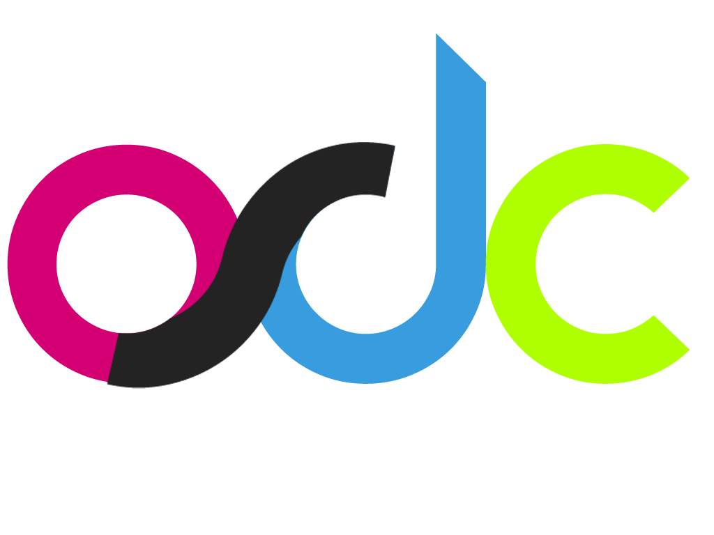

Backpack Settings

Backpack is a collection of open hacks, tools developed & contributed by the OSDC. Currently, this extension allows you to access our very own JIIT's proprietary "Internet Explorer only" Webkiosk on Chrome.
Feel free to fork us on github - hack around, add new features and send us a pull request.
Feel free to fork us on github - hack around, add new features and send us a pull request.